| 日付 | 2025年11月16日（日） |
|---|---|
| 山域 | 西上州 |
| メンバー | 単独 |
| 山行形態 | 日帰り |
| アクセス | 車 |
| ルート (Map) | 土坂峠入口 (7:43) - (7:57) 土坂峠 - (8:45) 大久保山 - (9:03) 杉の峠 - (9:27) 父不見山 (9:39) - (10:00) 杉の峠 - (10:20) 大久保山 - (11:01) 土坂峠 - (11:39) 竹ノ茅山 - (12:14) 塚山 (12:21) - (12:50) 竹ノ茅山 - (13:15) 土坂峠 - (13:24) 土坂峠入口 |
『父不見 御荷鉾も見えず 神流川 星ばかりなる 万場の泊まり』
尾崎喜八の詩だ。父不見山は「ててみえずやま」と読む。
御荷鉾山に登ったのは2008年。その時から父不見山のことは気になっていたが
17年間も登らずにいたのは、あまり面白そうな山ではないからだ。
しかし、いつまでも登らずに放置しておく訳にはいかない。
単独行で山に行ける機会に、足を向けてみることにする。
土坂トンネル近くの空き地に車を停める。標高690m。
万葉の里から周回コースを歩くか、土坂峠から稜線を歩くか迷ったが
稜線の方が楽しそうだったのでこちらの道を選択。
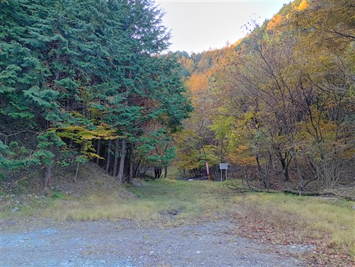
最初は荒れた林道を登るが、途中に登山口がある。
標識が無いので気づかずに通り過ぎてしまった。
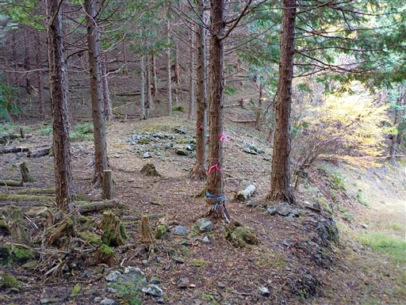
一登りで土坂峠に到着する。何の情緒もないつまらない峠。
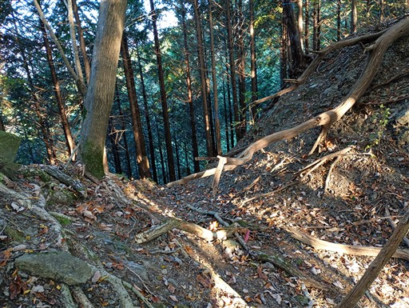
と思ったら、近くに石祠を発見。ちゃんと歴史あるものが残されていた。
ここは志賀坂峠と並んで、埼玉と群馬を結ぶ重要な峠道だった。
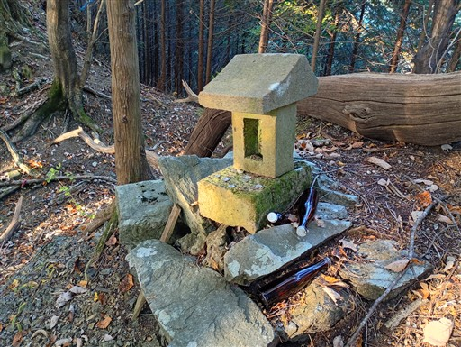
ここから尾根道。かなり急な坂から始まる。
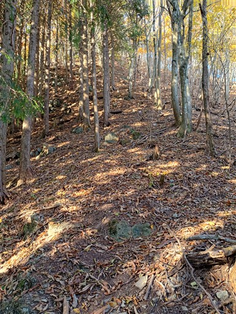
紅葉がきれいだ。モミジは特に美しい。
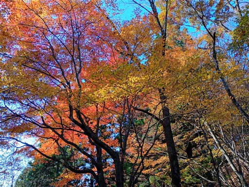
ヒノキの植林地帯。植林と自然林がところどころ入れ替わる。
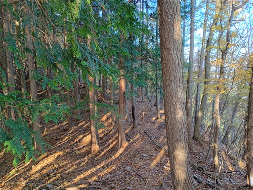
右側は崖。案外痩せ尾根の登山道だ。
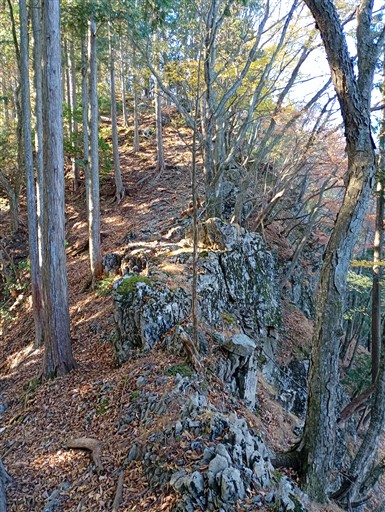
大久保山に到着。尾根の途中にある小ピークだ。
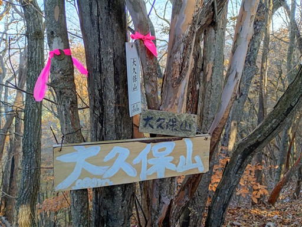
ほとんど展望の広がらない登山道だが、木の隙間から両神山が見える。
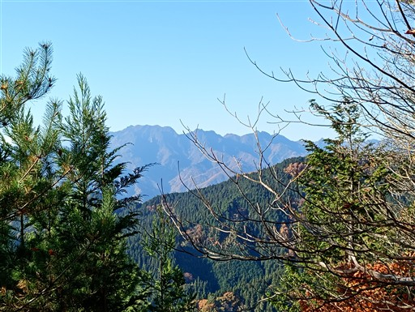
杉の峠に到着。ここから登る人の方が多い。
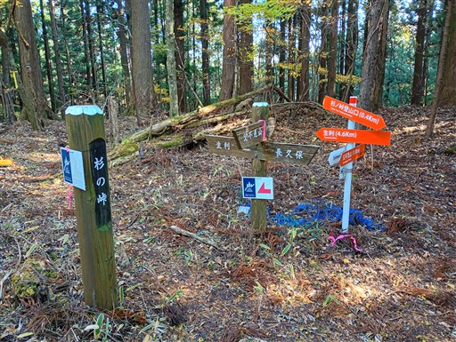
ここにも石祠と立派な石柱がある。
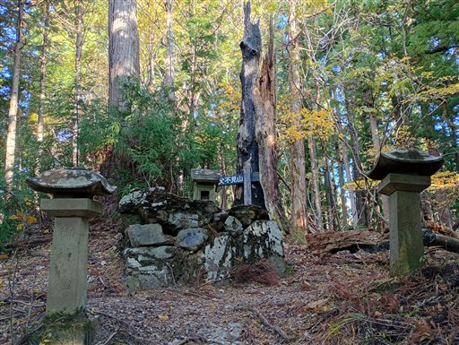
ここまでの登山道はかなり細くて分かりにくかったが、
杉の峠からは格段に登山道が良くなる。
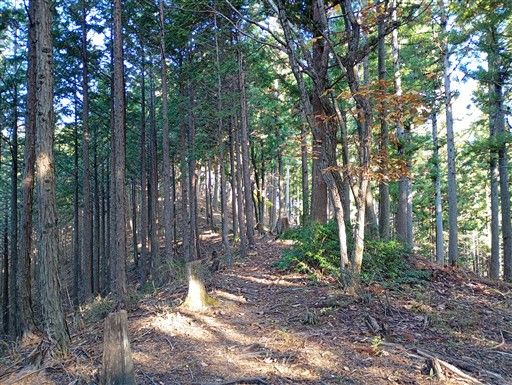
父不見山に到着。標高1047m。
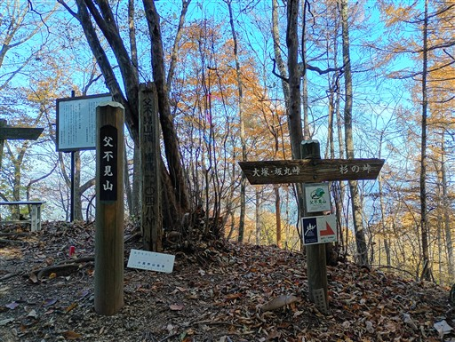
父不見山の山名の由来が、埼玉県、群馬県、両方記載されている。
軽くおやつを食べたら元来た道を引き返す。
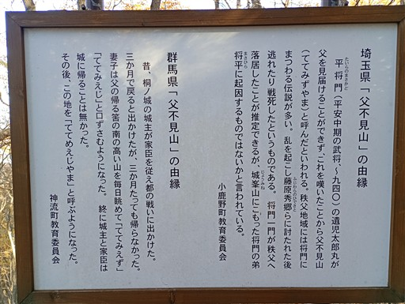
アセビの葉の中で、真っ赤なモミジの葉が目立っている。
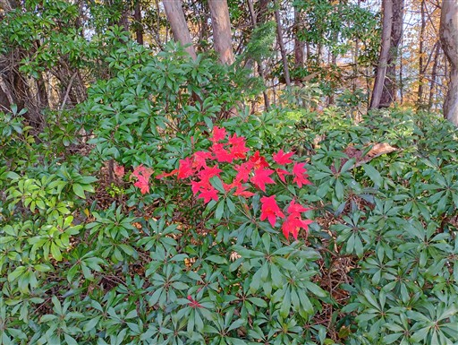
無駄にカラフルなリボン。
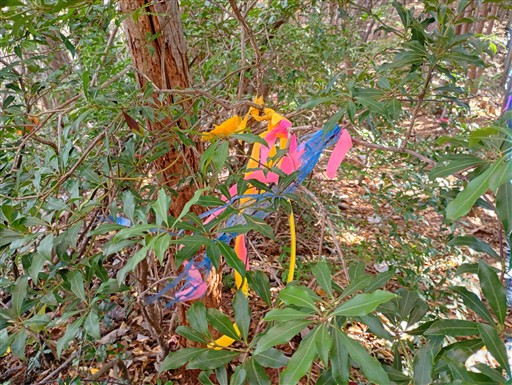
本日は天気が良い。ほとんど展望が広がらない尾根なのが残念だが
ところどころ景色が見えるし、紅葉もきれいなので歩いていて気分が良い。
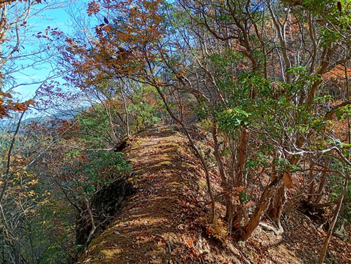
岩場。右から巻くのが正しいが、復路は直登してみる。
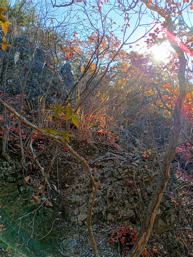
岩から木が生えている。
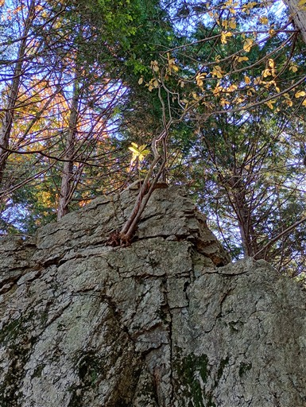
幾重にも山が折り重なっている。
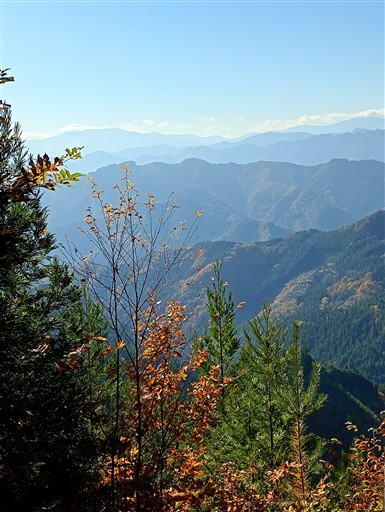
土坂峠に戻ってくる。まだ11時なので、反対方向の塚山も往復することにする。
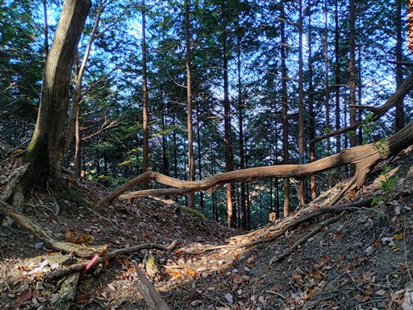
植林地帯のつまらない道が続く。
やたら急斜面で、しかも登山道は一直線につけられている。
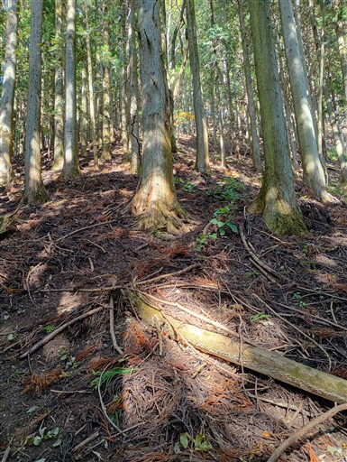
途中の竹ノ茅山に到着。
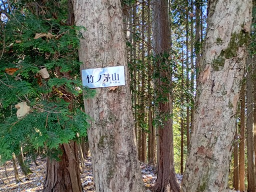
この山頂には電波塔がある。
発電機が動いているのか、うるさく、排気ガスが臭い。
ここからの道が極めて分かりにくい。左右に尾根は分かれるが、
正解の正面の尾根は形がはっきりせず、尾根っぽく見えない。
電波塔も邪魔で、道がわからずしばらくウロウロしてしまう。
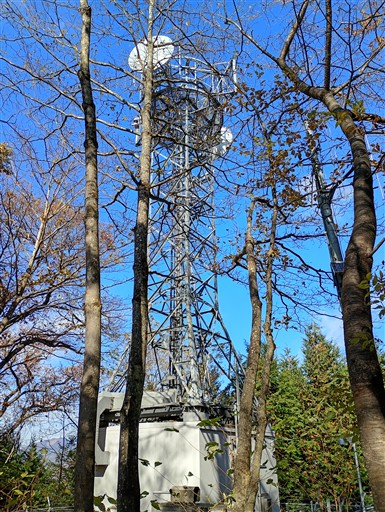
ようやく道を見つけて歩を進める。左の視界が広がり、御荷鉾山が良く見える。
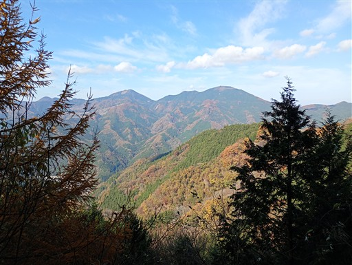
塚山手前のピーク直下は紅葉がきれい。
ほとんど植林地帯だったが、ここはオアシスのような空間だ。
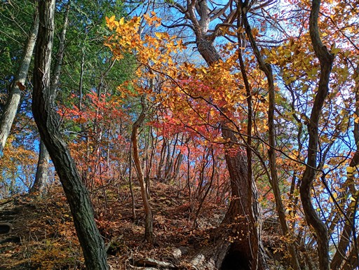
鳥の羽が散乱している。
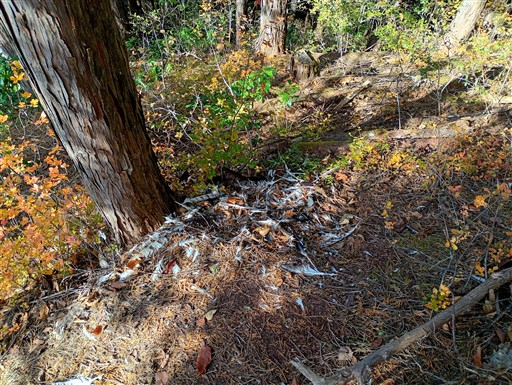
こんなところまで林道が来ている。
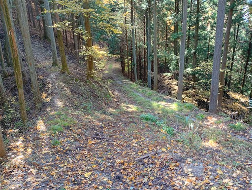
左と右、どちらを歩いたらよいかよく分からない道。
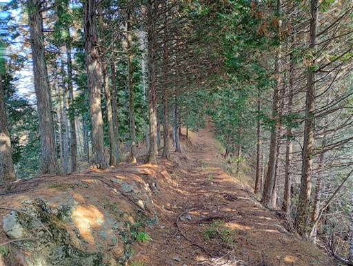
塚山山頂に到着する。標高954m。
埼玉百名山と記載されている。埼玉にも百名山があったのか…
しかし、どう考えても名山とは言えない。埼玉百山くらいにしておけばよいのに。
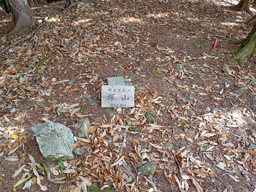
前方は冴えない植林地帯。
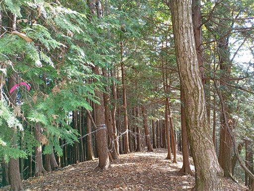
振り返ると、ここだけ自然林が広がり紅葉がきれいだ。
全く面白みのない登山道、山頂で、トレーニング山行と割り切る必要がある。
元来た道を引き返して下山。
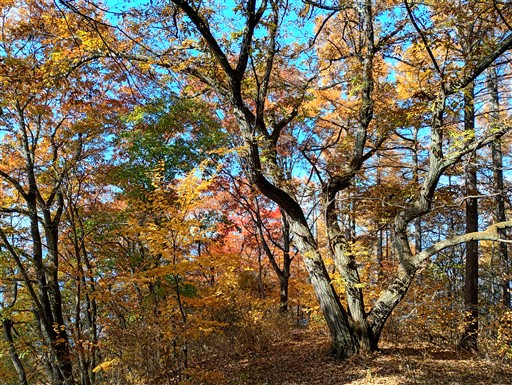
少し足を延ばして、道の駅万葉の里で食事を取る。
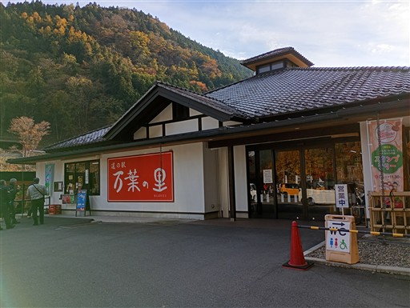
立派な吊り橋がかかっている。通行料100円で、せっかくなので渡ることにする。
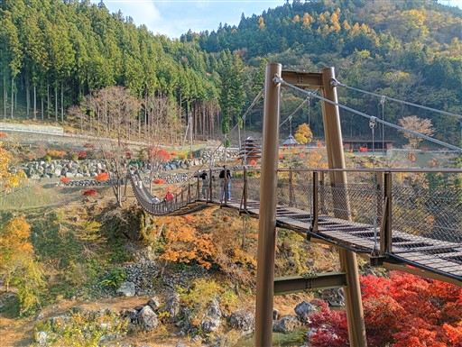
橋の上。真ん中は隙間があって下を覗けるようになっている。
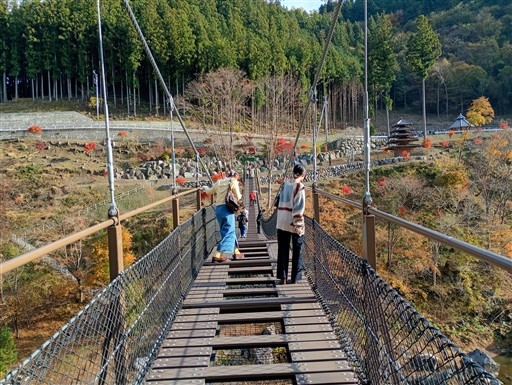
眼下を流れるのは神流川だ。
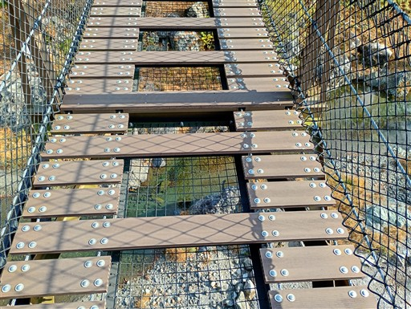
見事な紅葉。山の上は終わりかけで、下界がちょうど紅葉のピークだ。
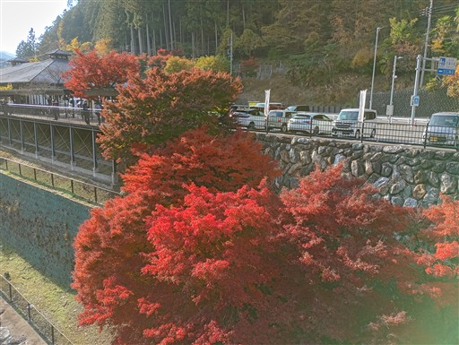
橋から眺める美しい風景。景色を堪能したら帰宅する。
父不見山は、想像通り地味な山だったが、土坂峠～杉の峠の稜線は
紅葉がきれいで、登山道も面白かった。
シカ以外、誰とも出会わない静かな山だった。
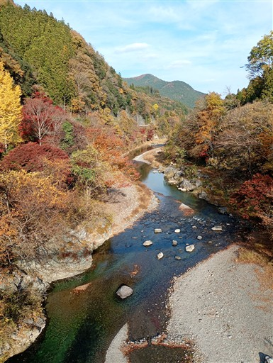